Step 1: Creating a simulation project
Begin by importing the model we intended to run a simulation with into Choreonoid and creating a project. For details on this method, see the section on Creation of Simulation Project. In this section, we describe in detail the basic workflow.
Launching Choreonoid
Begin by launching Choreonoid.
You can launch Choreonoid however you wish. For the purposes of this tutorial, we launch it from the command line. For brevity’s sake, we directly execute the executable files generated in the Choreonoid build directory at build time. In this case, you do not need to install by invoking “make install.” For example, if you built your files immediately within the source directory, the source directory is itself the build directory. You would launch Choreonoid the following way:
cd [source directory]
bin/choreonoid
In this case, the model files accompanying Choreonoid and the controller files and other assets we will newly create in this tutorial reference those within the Choreonoid source directory. This ensures that everything stays cleanly in one directory.
注釈
Naturally, you can also use files installed to /usr/local or another directory through the make install command. You are free to use those as necessary. In this case, execute “make install” when creating the controller; note that this installs against the controller file stored in the installation path.
注釈
For basic Linux usage, see the section on About the basic usage of Linux.
Once Choreonoid launches, first create a world item. From the Main Menu, select File > New > World. You will see the Generate New World Item dialog appear. Click Generate. A new item named “World” will appear in the Item Tree View as shown below.
{kind=link}
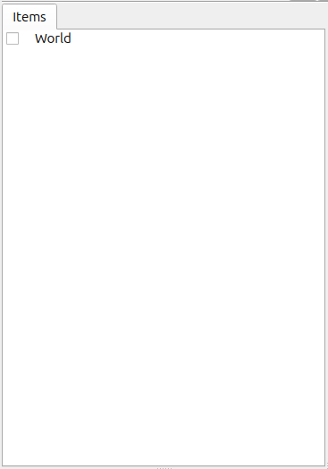
The World item is intended to represent a single virtual world and must be generated if you intend to run a simulation
Importing the Drone model
First we import the Drone model to be used for this simulation. As the name suggests, the Drone model resembles a drone. It is also equipped with a camera. First click on the World item we just created in the Item Tree View to select it. Doing so will ensure that subsequently imported items are sub-items of the World item. From the Main Menu, select File, Import, then Body. This will generate a file selection dialog where you can select the model file. Now, place a checkmark in the box on the lower lefthand side of the dialog window that says, “Place a Check on the Item Tree View.” If the model file is correctly imported, the Item Tree View should appear as below.
{kind=link}
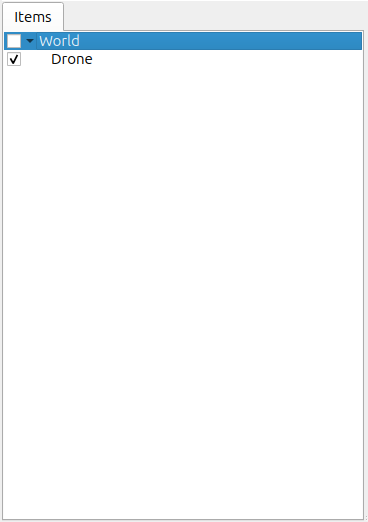
In Choreonoid, robots and environmental models are referred to as Body Model. They are managed in the Item Tree View as Body Items. The Body Item for the Drone model we have just imported is displayed as Drone on the Item Tree View. The Drone item is displayed one tick to the right of the World item. This is critical to note, as it indicates that the Drone item is a sub-item of the World item. This positional relationship enables the Drone model to be recognized as belonging to the World item, a virtual space. If the World item is selected upon import of the Drone model, it should be positioned as above. If it is not, you can Move the item (drag the Drone model and drop it on top of the World item) to arrange it properly. Also confirm that there is a checkmark on the left of the Drone item. If you enabled “Place a Check on the Item Tree View” in the earlier dialog, you should see a check on the above image. If there is no check, you can manually add a checkmark now. Once the Drone item is checked, the model appears in the Scene View.
{kind=link}
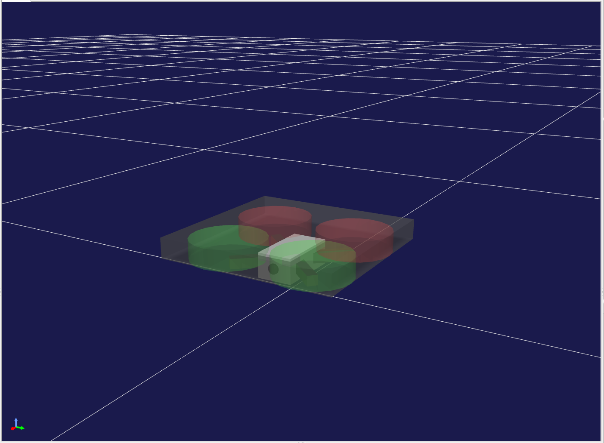
By Changing the Viewpoint in the Scene View, you will make it easier to view the Drone model as you work. You can use the mouse wheel on the Scene View to move the perspective in and out and zoom the model in bigger. The above image shows what the screen will look like after having done that. If you want to create a more advanced model, see the section on Using external mesh files.
Importing the ground model
We have loaded the Drone model, but gravity causes the Drone to sink when running a simulation. First, import the ground model to serve as an environment to support the Drone. As discussed previously, select the World item and, from the main menu, click File > Import > Body. Then import the floor.body file found within the /share/model/misc/ subdirectory within the Choreonoid install path. This will cause the Item Tree View to be as follows.
{kind=link}
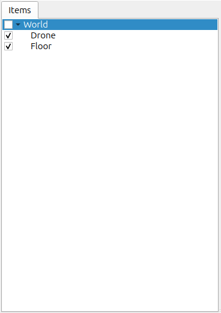
As with the drone item,
check whether this is a sub-item of the World Item
and whether the Floor item has a check next to it.
If there is a check, the Scene View should also display a floor model (in blue) as below.
{kind=link}
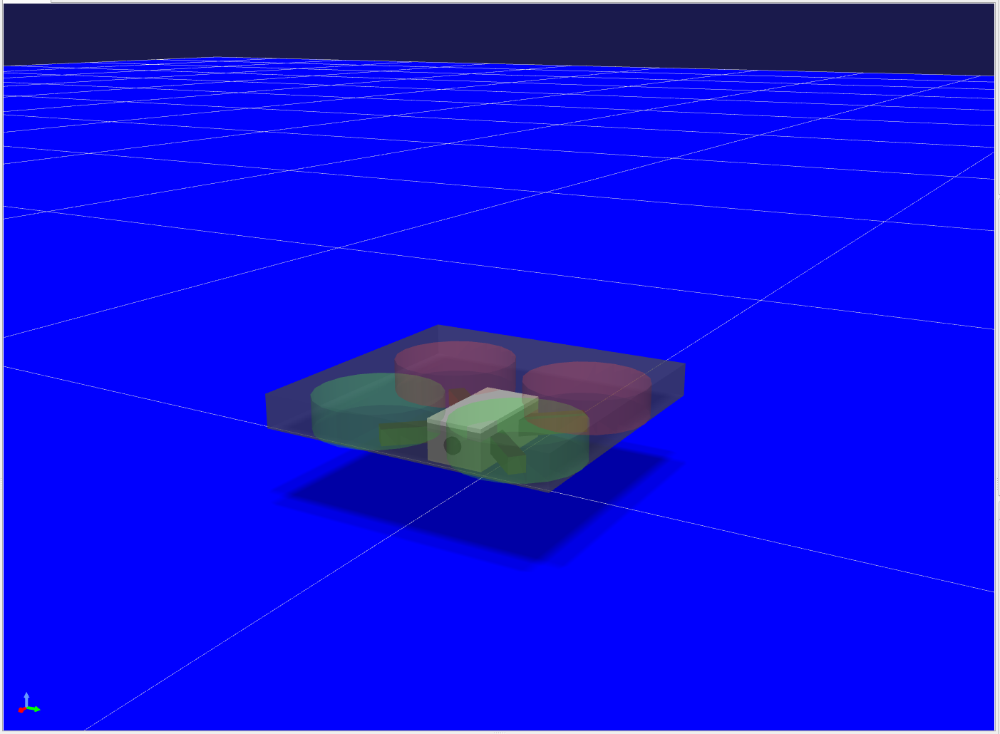
This completes the basic configuration of the model. While we are using the default values (at time of import) for each model (position/orientation), if you want to change the defaults, see the section on Configuration of Initial Status.
注釈
You are not required to display the floor model on the Scene View. The Floor model we are using is a simple flat surface with Z=0. Provided you have the default floor grid display on, that may be enough for you. In that case, you can remove the check on the Floor item to turn its display off. If the model item is a sub-item of the World item, the simulation deems it to exist, irrespective of whether it is physically displayed.
Creating a simulator item
To run a simulation, you must first create a simulator Item. We’ll be using a standard simulator item, the AIST simulator. From the main menu, select File, New, then AIST Simulator to generate the item. Position the simulator item, as with model items, as a sub-item of the World item. This lets you explicitly define the world in which the simulator item’s simulation will take place. Therefore, when generating the above item, you should also ensure that the World item is selected. If the item you created properly appears in the Item Tree View as below, you have followed these steps correctly.
{kind=link}
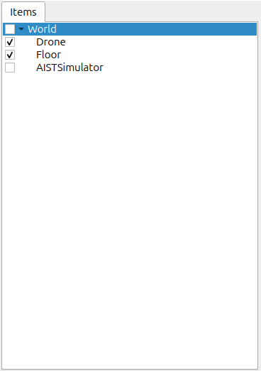
Setting properties
Next, we set the item properties in order to properly run the simulation. Begin by configuring the Drone item’s properties. Selecting the Drone item will cause the item properties list displayed on the Item Property View to look like below.
{kind=link}
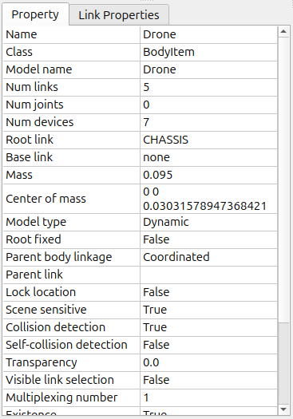
The corresponding body item property for simulations in this case is self-collision detection. By default, this is set to false. Even if model links collide, they will not halt there and slip past each other. By double-clicking on the point where the self-collision detection property reads “false,” you can toggle the combo box between true and false. Here, select true. To run a simulation, you must adjust the simulation item’s properties accordingly. The default settings are fine for now, but you will notice that this allows for Configuration of Time Resolution, Configuration of Time Range, Synchronization with Real Time, Recording of Simulation Result, Recording of Device States, among other options.
Creating a multi-collider item
The MultiCollider Item is used to define virtual regions in the Choreonoid world that contain elements such as water or air. To create one, select File > New > MultiCollider from the main menu, and specify the type as CFD. The generated MultiCollider item should be placed as a child of the World item. You can also define more detailed regions within the world by creating multiple MultiCollider items.
{kind=link}
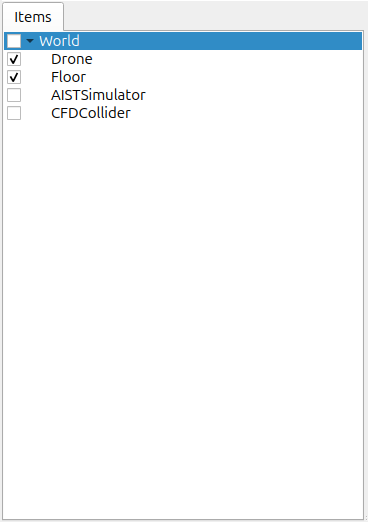
注釈
When using multiple MultiCollider items, their target areas may overlap. In such cases, the settings of the MultiCollider item positioned lower in the Item Tree View will take precedence and be applied.
The visibility of these fluid items can be toggled using the checkboxes in the Item Tree View. Additionally, any MultiCollider items that are hidden (unchecked) will be excluded from the simulation.
Setting properties of the multi-collider item
The parameters for the MultiCollider item are as follows:
Parameter |
Default Value |
Unit |
Description |
|---|---|---|---|
Density |
0.0 |
kg/m³ |
Specifies the density of the fluid. |
Viscosity |
0.0 |
Pa·s |
Specifies the viscosity of the fluid. |
Steady Flow |
0, 0, 0 |
N, N, N |
Specifies the external force applied to objects within the region. |
Shape |
Box |
Specifies the shape of the region (Box/Cylinder/Sphere). |
|
Size |
1.0, 1.0, 1.0 |
m, m, m |
Specifies the XYZ dimensions of the region (only if Shape is Box). |
Radius |
1.0 |
m |
Specifies the radius of the region (only if Shape is Cylinder or Sphere). |
Height |
1.0 |
m |
Specifies the height of the region (only if Shape is Cylinder). |
Position |
0, 0, 0 |
m, m, m |
Specifies the XYZ coordinates of the region's position. |
RPY |
0, 0, 0 |
deg, deg, deg |
Specifies the orientation of the region using Roll, Pitch, and Yaw. |
Diffuse Color |
0, 0, 0 |
Specifies the diffuse color of the region in RGB. |
|
Transparency |
0 |
Specifies the transparency level of the region. |
In this tutorial, we will use a box-shaped area as an example. Let's also make the area slightly larger, at 100m x 100m x 100m. Change the "size" property of the MultiCollider to 100 100 100.
{kind=link}
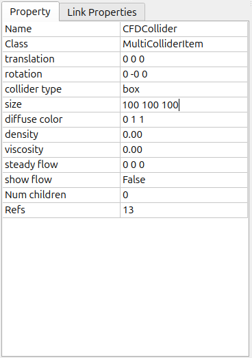
Creating a sub-simulator item
Next, you must add a CFD Simulator Item to your project. The CFD simulator is a sub-simulator to calculate flying drone behaviors.
{kind=link}
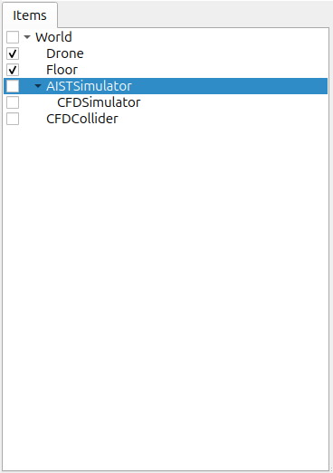
Saving a project
The steps thus far will have allowed you to create a base for the simulation project. At this point, you should consider saving your project. From the Main Menu, select File > Save Project As, and on the dialog that appears, select a directory and set a filename, then save. We have used step1.cnoid as the filename. Each time you complete a step in this tutorial, we recommend saving a new filename. Each time you change the project settings, it would also be good to remember to overwrite the file. This can conveniently be done using the Save Project button seen below.
{kind=link}
Launching a simulation
For the time being, let’s try running the current simulation. Click the Begin Simulation button shown on the Simulation Bar below to start the simulation.
{kind=link}
This causes the Drone model to fall downwards, as shown in the figure below, and then stop after striking the floor.
This is because there is no Controller to control the Drone model. In this way, if there is no controller, there is no way to maintain the orientation of the model. As discussed in the section on Case without Controller in the Introduction of Controller chapter, for humanoid robots, the effect is so pronounced that the robot fails forward. You will inevitably need a controller to control the way in which the robot moves. In the next step, we will be creating one.
Stopping a simulation
Before proceeding to the next step, make sure you halt the simulation. Click the Simulation Halt Button shown below to end it.
{kind=link}
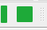
Going forward, after a simulation, remember to end the routine and then build the next project.